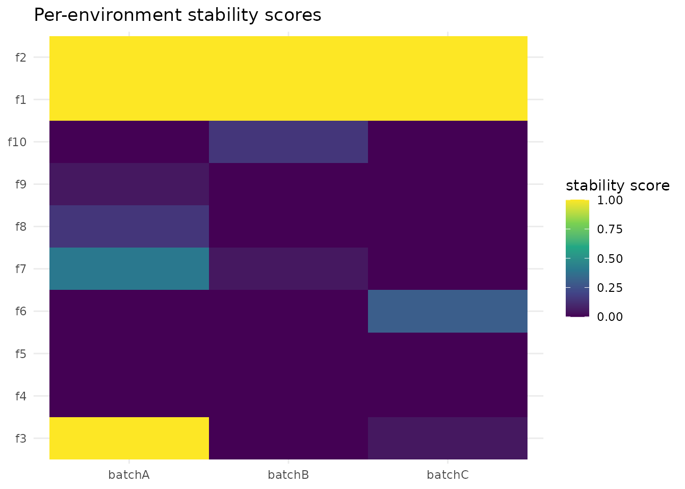

Environment Stability: Reliable AND Transportable Feature Sets
Source:vignettes/stablr-environments.Rmd
stablr-environments.RmdContents
- 1 Introduction
- 2 A synthetic multi-batch example
- 3 The environment-stability workflow
- 4 Interpretation of the aggregated scores
- 5 Relation to invariant causal prediction
- 6 Empirical positioning: the WS-8 v3 benchmark
1 Introduction
The core STABL workflow answers one question: which features stay stable across bootstrap resamples of one dataset. All bootstrap resamples come from the same pool of samples. A second question is just as practical: which features stay stable in every environment — every batch, cohort, or site. A feature may show stability in only one favourable subset.
This vignette introduces stabl_environment_stability().
This workflow answers the second question. The idea comes from invariant
causal prediction (ICP; Peters, Bühlmann & Meinshausen, 2016). ICP
targets exactly this kind of cross-environment stability.
stabl_environment_stability() makes no causal
claims. It needs nothing beyond environment
labels.
Attach the package as follows.
2 A synthetic multi-batch example
The simulation has 150 samples in three batches (batchA,
batchB, batchC; 50 samples each) and 10
features:
-
f1andf2relate to the outcome with the same effect in all three batches. This is genuinely transportable signal; -
f3relates to the outcome inbatchAonly. For example: a batch-specific measurement artifact or a population-specific effect; -
f4–f10are null.
set.seed(2026L)
n <- 150L
p <- 10L
environments <- factor(rep(c("batchA", "batchB", "batchC"), each = 50L))
x <- matrix(
rnorm(n * p),
nrow = n,
dimnames = list(paste0("s", seq_len(n)), paste0("f", seq_len(p)))
)
y <- setNames(
0.9 * x[, "f1"] + 0.8 * x[, "f2"] +
1.0 * x[, "f3"] * (environments == "batchA") +
rnorm(n, sd = 0.5),
rownames(x)
)3 The environment-stability workflow
stabl_environment_stability() fits
stabl_fit() separately within each
environment. It then aggregates the per-feature stability
scores. All arguments beyond x, y,
environments, lambda_grid, and
random_state go to stabl_fit() unchanged.
res <- stabl_environment_stability(
x, y, environments,
lambda_grid = data.frame(lambda = c(0.6, 0.4, 0.25)),
n_bootstraps = 20L,
hard_threshold = 0.5,
random_state = 11L
)
res
#> <stabl_env_stability>
#> Environments: 3 (batchA, batchB, batchC)
#> Features in: 10
#> Min score >= 0.5: 2 feature(s)
#> Top by min score: f1, f2, f3, f4, f5The result object carries one full stabl_fit per
environment (res$env_fits). It also carries the feature ×
environment score matrix (res$env_scores) and two
summaries. The next chunk inspects them.
round(res$env_scores, 2)
#> batchA batchB batchC
#> f1 1.00 1.00 1.00
#> f2 0.95 1.00 1.00
#> f3 1.00 0.05 0.00
#> f4 0.00 0.00 0.00
#> f5 0.10 0.00 0.00
#> f6 0.00 0.05 0.10
#> f7 0.25 0.00 0.00
#> f8 0.00 0.00 0.05
#> f9 0.05 0.00 0.00
#> f10 0.00 0.10 0.05
round(res$min_scores, 2)
#> f1 f2 f3 f4 f5 f6 f7 f8 f9 f10
#> 1.00 0.95 0.00 0.00 0.00 0.00 0.00 0.00 0.00 0.00The same evidence is easier to read as a heatmap. Features are ordered by their min-agg score, so the transportable features cluster at the top and the batch-dependent ones sink to the bottom.
env_long <- data.frame(
feature = rep(rownames(res$env_scores), times = ncol(res$env_scores)),
environment = rep(colnames(res$env_scores), each = nrow(res$env_scores)),
score = as.vector(res$env_scores)
)
env_long$feature <- factor(env_long$feature,
levels = names(sort(res$min_scores)))
ggplot2::ggplot(env_long, ggplot2::aes(environment, feature, fill = score)) +
ggplot2::geom_tile() +
ggplot2::scale_fill_viridis_c(limits = c(0, 1), name = "stability score") +
ggplot2::labs(x = NULL, y = NULL,
title = "Per-environment stability scores") +
ggplot2::theme_minimal()
In res$env_scores, the transportable features
f1 and f2 hold high scores in all three
batches. f3 scores highly in batchA only. The
res$min_scores summary reduces each feature to its weakest
environment. Reports use this quantity.
4 Interpretation of the aggregated scores
The aggregation rule is the minimum across environments of each feature’s max-over-lambda stability score. This minimum is the min-agg score. A feature is only as reliable as its weakest environment:
-
f1andf2score high in every batch. Their minimum stays high. These are the transportable features. They would survive a new batch, a new site, or a new cohort. -
f3is perfectly stable withinbatchA. A plain single-cohort STABL run on the pooled data (or onbatchAalone) would select it. InbatchB/batchC, its score collapses to null level. Its minimum score is low. The minimum flags it as not transportable. - The null features never accumulate a high minimum.
A practical reporting pattern follows. Use
res$min_scores as a transportability gate, not as
a ranking: features above the bar in every environment are export
candidates, and features with high mean_scores but low
min_scores are batch-dependent candidates. Such a
candidate warrants investigation, not export. (For ranking features by
replication strength, the WS-8 v3 benchmark found per-cohort effect-size
meta-analysis preferable on a real eight-cohort atlas; see Section 6.)
The pairwise_adjusted_similarity matrix additionally
summarises agreement between the selected sets of any two
environments. The agreement is chance-corrected via
stabl_similarity() with
method = "adjusted".
Two practical notes:
-
Lambda grid matters. The per-environment summary is
a max over the lambda grid. A grid that reaches the saturated
small-lambda regime inflates all scores toward 1. In that regime, the
lasso selects nearly every feature. Prefer an explicit, top-heavy grid
as above. Or interpret
lambda_grid = "auto"(computed separately per environment) with this leniency in mind. -
Environment-aware resampling is complementary. For
a single pooled fit, you can make the bootstrap respect
environment structure. Pass the labels as
sample_groupstostabl_fit(). The group bootstrap keeps whole environments intact. Alternatively, usebootstrap_strata. The workflow shown here answers a different question. It does not ask whether selection is stable under resampling. It asks whether selection is the same everywhere.
5 Relation to invariant causal prediction
Invariant causal prediction (Peters, Bühlmann & Meinshausen,
2016) uses environments to test invariance of the outcome
mechanism. It returns variables with an identifiable causal role. It
targets causal parenthood. This target needs corresponding assumptions,
in particular about hidden confounding. It also classically needs an
environment-valued variable. stabl_environment_stability()
borrows only the stability-across-environments idea:
- No causal claims — outputs are selection frequencies, not causal sets;
- No environment variable required — plain labels are enough: batch, cohort, site, sequencing lane, time block. Multi-batch omic studies have exactly these labels;
-
No new dependencies — everything builds from
stabl_fit()and the existingstablraccessors and metrics.
The workflow fits one operational question: which biomarkers hold up in every environment in which they were measured. The result is a feature set that is reliable and transportable.
6 Empirical positioning: the WS-8 v3 benchmark
How does this workflow compare with simpler ways of combining
per-cohort evidence? The WS-8 v3 benchmark
(benchmarks/ws8_v3/ in the package source; see the
companion vignette “Case study: age-associated cell types across eight
cohorts”, Section 10.9) evaluated the six v2 selectors plus four new
candidates on the eight-cohort aging atlas (2,609 donors, 59 cell-type
features) under a locked protocol: 8-fold leave-one-cohort-out, primary
endpoint held-out directional replication of the top-10 panel (macro R@10), package pinned at one
commit, one seed.
The findings relevant to this vignette:
- As a ranking procedure, min-agg scores are not the strongest available. Ranking by min-agg stability scores (the M4 selector) replicates worse in held-out cohorts than ranking by a random-effects meta-analysis of per-cohort effect estimates (M0): M4 − M0 = −0.068 [−0.122, −0.015], sign-flip p = 0.047 on the pinned package (the v2 estimate was −0.108, p = 0.016). The workflow does retain a clear advantage over pooled STABL (M4 − M3 = +0.185, p = 0.008): fitting one pooled model across cohorts is the wrong baseline, and per-environment fitting is the right one.
- The workflow’s strength is the membership question. Which features pass the bar in every cohort, and which are batch-dependent (high mean score, low min score)? The benchmark’s heterogeneity audit (per-feature Cochran’s Q, I², sign concordance) is the effect-size analogue of the same invariance idea, and the two are complementary: selection-frequency invariance for gating, effect-size pooling for ranking.
- Harmonize-then-select is the wrong direction. Merging cohorts after ComBat harmonization and selecting on the merged data was strongly inferior (macro R@10 0.060 vs 0.395 for M0), for a mechanistic reason: a label-free transform cannot reproduce the covariate terms of the training fit, so between-cohort outcome signal is removed before selection ever sees it.
The resulting division of labor on this evidence: use
stabl_environment_stability() as the transportability
gate and batch-dependence diagnostic, and use per-cohort
association with random-effects meta-analysis as the ranking
procedure. The benchmark is a single application (immune aging, 59
compositional features, 8 cohorts); it is a case study, not calibration
evidence for any selector.